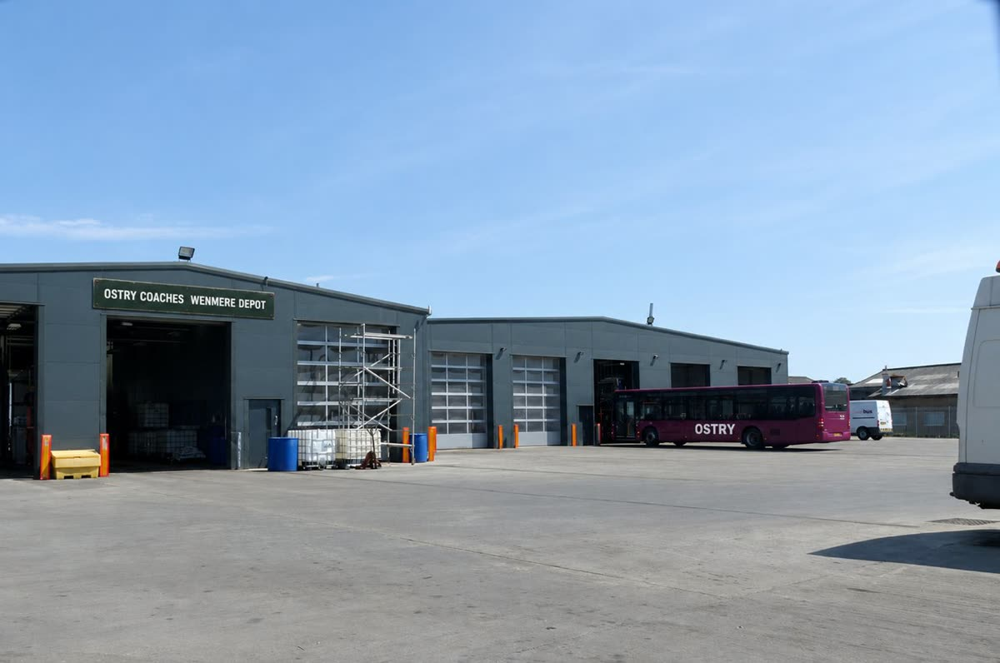
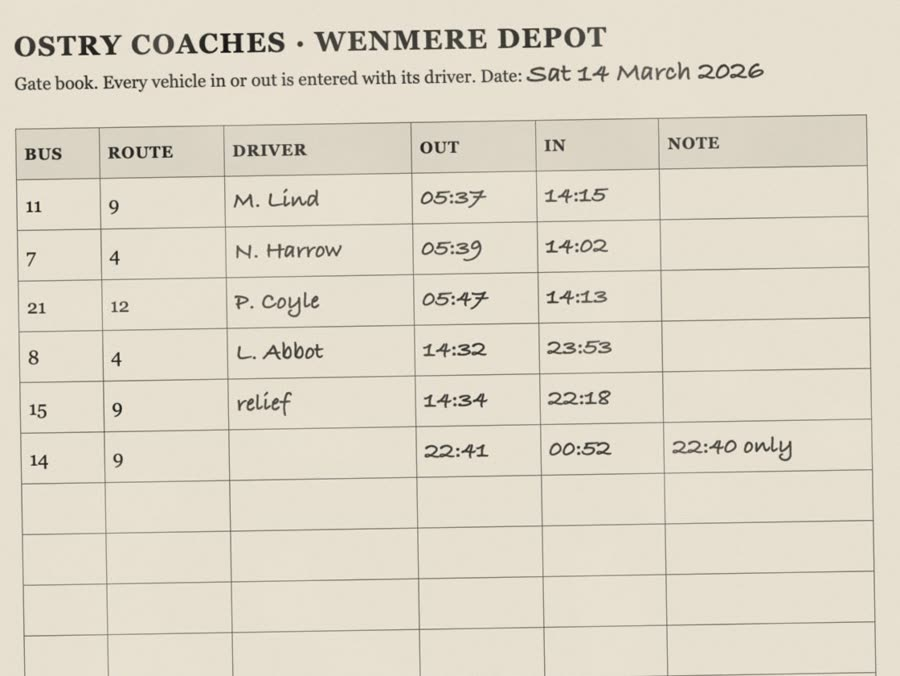
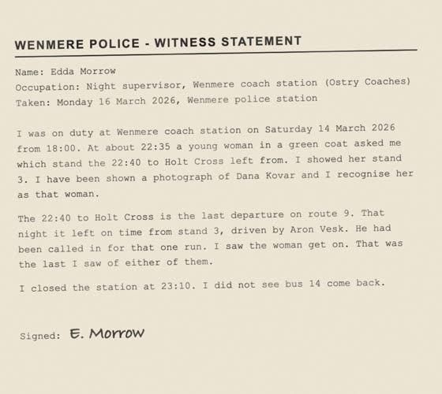

The name nobody wrote down
Dana Kovar, a nurse, boarded the last bus out of Wenmere on Saturday 14 March 2026 and never reached her night shift in Holt Cross. The bus company's gate log, fuel receipts and dispatch sheet run to several hundred lines over five months, and nobody reading them saw anything wrong.
Fictional case of a missing person. Every name, company and place in it is invented.

The story
The night supervisor at the coach station saw Dana board the 22:40 to Holt Cross, driven by Aron Vesk, who had been called in for that one run. The gate book for that night has the bus going out at 22:41 and back at 00:52. The driver's box is empty.
Aron is named in every log until that night and in none for the next 73 days, though the roster kept him on route 9.

The gate book, 14 MarchBus 14 at 22:41, no driver written down 
The supervisor's statementThe last time anyone saw either of them
What it shows
- One person across papers and log lines
- A standing question that wakes on new evidence
- Gaps in a record
- Who was where, and seen together
- A colleague works the lead
- A conclusion signed as a lead, not a finding
The pile
About 675 lines over five months: 417 gate log lines, 150 fuel receipts and 108 dispatch rows, beside a roster, statements, a missing notice, a charge sheet and a bail record. 608 of the lines name a driver.
Day by day
A nurse does not reach her night shift
- Arrives
- Her flatmate's statement, the missing person notice and her photograph.
- A person
- Joins the three papers about Dana as one person.
The night supervisor saw her board
- Arrives
- The night supervisor's signed statement, as a scanned page: she showed Dana to stand 3 and saw her board the 22:40, driven by Aron Vesk. With it, the gate book page for that night and a photograph of the depot yard.
- The app
- Reads the scan, in this demo from a fixed text. On the gate book page, the line for bus 14 at 22:41 has no driver.
Who drives route 9
- Arrives
- The depot manager's note that the route 9 lates are Aron Vesk's duty on bus 14, the roster and a staff list.
- The app
- Reads the first three papers together and sums them up in a short brief.
The depot's logs to the end of March
- Arrives
- The gate log and fuel receipts for February and March and the March dispatch sheet: several hundred lines, each driver named by initial and surname or by fuel card.
- The app
- Treats each line as its own mention and joins it to its driver. Aron Vesk's last named line is 12 March.
A standing question on the driver
- A person
- Asks the case: "Tell me when Aron Vesk is named in a new record."
- The app
- Its first check finds the five papers that already name him.
April's logs, and nothing on him
- Arrives
- April's gate log and fuel receipts, with a police charge sheet and a bail record about two other drivers.
- The app
- The question wakes on the new lines and finds no record naming him. His late duty goes out every working day under relief.
May and June: his name is back
- Arrives
- The logs for May and June.
- The app
- The question wakes again and reports "A. Vesk" in the gate log and "VESK A" in the fuel receipts, from 26 May.
Seventy-three days with no name
- The app
- The gap finder sets the supervisor's last sight of Aron on 14 March beside his next named log line on 26 May: no record of him for 73 days. It also flags that nothing places Dana after that night. It proposes; a person decides what the silence means.
Who was at the depot that night
- A person
- Checks the 11 log lines for 14 March against the gate book page and accepts them with the three last-seen accounts.
- The app
- Proposes a possible incident: six people placed at the coach station that day, and the same group as people seen together.
- A person
- The gate times show the early drivers gone by 14:15. She keeps Dana Kovar, Aron Vesk and Leon Abbot, the late driver in the yard until 23:53, and accepts that as an incident. The group seen together says nothing more, and she rejects it with her reason.
A colleague works the lead
- A person
- Assigns the May and June gate log and the gate book page to a colleague and asks whether the driver named on 26 May is the Aron Vesk of the 22:40. The colleague answers on the line and marks her work updated.
The conclusion
- A person
- Writes what the case shows: a lead, not a finding about what he did. She sets aside leave and missed entries, names what is not established and signs; a second analyst agrees.
The conclusion
Aron Vesk, who drove the 22:40 that Dana Kovar boarded on 14 March 2026, is named in no log for the next 73 days; this is a lead to follow, not a finding about what he did.
- Confidence
- Reasonable suspicion. Reliable information points this way, enough to keep looking, not enough to rely on.
- Rests on
- The supervisor's two sightings, of Dana and of Aron, and his last and next log lines, on 12 March and 26 May.
- Set aside
- He was on leave. The roster keeps him on route 9, and the depot manager has no record of anyone on route 9 being on leave in March.
- The logs missed him while he kept driving. The gate log, the fuel receipts and the dispatch sheet are kept apart; all three last name him on 12 March, and the gate log and the fuel receipts name him again only from 26 May.
- Not established
- Where he was during those 73 days.
- What happened to Dana Kovar.
- Why the gate line for his last run was left blank.
- Peer review
- Signed by one analyst and agreed by a second.
The score
Both planted gaps found. None of the 4 look-alikes flagged.
The gap finder flagged none of the look-alikes: a driver arrested and back on the logs 59 days later, one released on bail first, one with a record dated only by its year, and one on 70 days of recorded leave. It runs on rules, so the result is the same with or without a model.
It also notices a regular presence that stops. Take away the supervisor's statement and the logs alone still give Aron's silence: named at the depot gate about five days a week, then in no record for 75 days from 12 March, while the gate went on recording others.
Measured on 21 November 2026 on this synthetic case, and again on 22 November with the rule for a presence that stops. A test in the source pins the result.
The limit
No model reads the papers in this case. Every claim is written into the case file and pinned to its cell or its words, and the standing question runs on a fixed demo answer that matches names only. With six drivers at one depot every day, the app also finds many groups of people seen together, and a person has to set most of them aside.
From finding to court
Every approval in the app is a passkey signature by a named person, and every decision can be undone in the open. A signed finding leaves in a sealed package. Anyone handed that package, a court included, can check offline that not one word changed since it was signed, without trusting you or us.
The other cases
Credits
Depot photograph. Edited. "Bus depot, Heanor Gate Industrial Estate" by Alan Murray-Rust, Geograph Britain and Ireland, CC BY-SA 2.0, from Wikimedia Commons. Altered: a sign reading "OSTRY COACHES WENMERE DEPOT" added and the bus lettering changed to "OSTRY" with an image model. The altered picture is shared under the same licence. It does not show Wenmere, which does not exist.

Gate book and statement. Generated: scanned pages rendered by the case's generator.